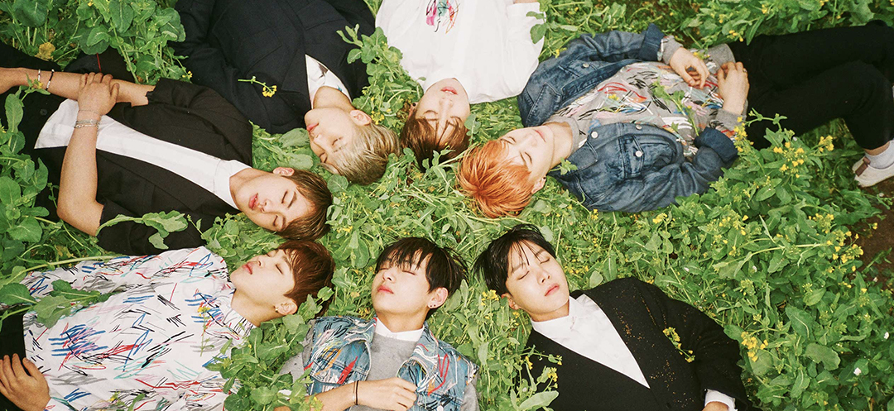

In 2010, the CEO of Big Hit Entertainment, Bang Si-hyuk, met the group’s leader, RM. Bang Si-hyuk was impressed by RM’s rapping skills. This was when the formation of BTS started. The group that the company created was originally meant to debut in 2011 with a different lineup, but the lineup was finalized with Jin, Suga, J-Hope, RM, Jimin, V, and Jungkook in 2012. A few months before their debut, several of their song covers on social media platforms started to gain attention.
On June 12, 2013, BTS debuted with their first single album “2 Cool 4 Skool”. The title track of this album was “No More Dream”. This album topped the music charts at number five in South Korea. Although this album only sold 24,000 copies in the year it was released, not long after over 145,000 copies ended up being sold. In 2014, “No More Dream” was recorded in Japanese and the Japanese version was released in June 2014.
“O!RUL8,2?”, the second part of their school trilogy, was released on September 13, 2013. The EP’s title track “N.O” reached number 92 on music charts in Korea, and the EP reached number four in Korea. Selling 34,000 copies in its release year, it soon sold over 160,000 copies by 2018. By the end of the year, BTS received several new artists of the year awards.
On February 12, 2014, the last EP of their school trilogy, “Skool Luv Affair”, was released. Over 100,000 copies were sold in 2014, and by 2018, over 250,000 copies were sold. The album’s success caused BTS to have their first appearance on Billboard’s World Albums Chart. Soon after the album’s release, BTS also held their first fan meeting and concert. In March, the group held their first fan meeting in Seoul with about 3000 fans attending. July in the same year, BTS also held a concert in West Hollywood.
“Dark & Wild” was their first Korean studio album. The two leading singles, “Danger” and “War of Hormone”, peaked at number 58 and number 173 on Korean music charts. The album sold over 200,000 copies by 2017. BTS performed at several Korean music shows and had their first concert tour, 2014 BTS Live Trilogy Episode II: The Red Bullet. In the same year, the group’s first Japanese studio album, “Wake Up” was released on December 24. To help promote the album, BTS held their first Japan tour in February of 2015, 1st Japan Tour 2015 Wake Up: Open Your Eyes. Following their first Japan tour, a solo concert was also held in Korea.
To express the beauty and anxiousness of youth, BTS released the EP “The most beautiful moment in life Pt.1”. This album was included as the only Korean album in Fuse’s list of the 27 Best Albums of 2015 So Far. “The most beautiful moment in life Pt.2” and “The most beautiful moment in life: Young Forever” were also released. One of the lead singles, “I Need U” hit the top five in Korea. At the time, BTS was supposed to disband, but after the release of “I Need U” and its great success, the members chose to renew their contracts. “Dope” was the popular B-side of the album. Many say that “Dope” is even more popular than the title track, “I Need U”. BTS received their first music show win on SBS MTV’s The Show with the song “I Need U”. In October of 2015, the “I Need U” MV was BTS’ first music video to surpass 100 million views on YouTube. They then had another world tour 2015 Trilogy Episode II: The Red Bullet. Not long after, they performed at Japan’s Summer Sonic Festival. BTS held their third concert tour, 2015 BTS LIVE The Most Beautiful Moment in Life: On Stage, in November 2015.
BTS released “Youth”, their second Japanese studio album, in September 2016. On the day of release, the album reached first on Japan’s music charts. About a month after, pre-orders for BTS’ second Korean studio album, “Wings”, started. Within the first week, over 500,000 copies of the album were sold. In this album, included were solo songs from each of the seven members. Critics, such as Rolling Stone, described it as one of the most conceptually and sonically ambitious pop albums of 2016. It got praised by Fuse for the vulnerable and honest song material. “Blood Sweat & Tears”, the lead single, was a music chart all-kill in South Korea. The music video broke the record on YouTube for the highest number of views of a K-pop group music video in 24 hours by gaining over 6 million views within the first 24 hours. This album marked their first time in surpassing a million album sales. Over 1.5 million copies of the album were sold in South Korea. At the time, it became the best-selling album in Goan Album Chart history at the time. Later in the year, BTS became the first artist who wasn’t from one of the big three companies (SM, YG, and JYP) to win artist of the year at Mnet’s 18th Asian Music Awards.
A repackaged version of “Wings” called “You Never Walk Alone” was released. The repackaged version became the most sold album in a month, with over 700,000 pre-orders. BTS held their second world tour “2017 BTS Live Trilogy Episode III: The Wings Tour” in alliance with the release of their newly repackaged album. During this tour, they visited 12 countries: Brazil, Australia, Japan, Hong Kong, and the United States. Tickets for some locations sold out within minutes. After the tour, BTS won top social artist at the 24th Billboard Music Awards. They became the first Korean group to get awarded a Billboard Music Award.
On September 18, 2017, BTS released the first EP of their Love Yourself series, “Love Yourself: Her”. The EP eventually ended up selling over 1.2 million copies in Korea within the first month, becoming the album with the highest monthly album sales at the time. The music video also became the most viewed music video in 24 hours with 20 million views. The song topped at number 67 on Billboard Hot 100, beating Wonder Girls and becoming the highest-charting song on Billboard Hot 100 for a K-pop group. “Mic Drop Steve Aoki Remix” was soon released and certified gold by the Recording Industry Association of America. “DNA” was also certified gold. BTS became the first and only Korean artist to receive two certifications. In 2018, BTS released a Japanese album including Japanese versions of a few of their Korean songs plus three new Japanese songs, “Don’t Leave Me”, “Crystal Snow”, and “Let Go”. Prior to releasing their Japanese album, BTS was the first K-pop group to perform at the American Music Awards. Performing at the well-known award show caused their popularity to grow internationally. BTS won themselves a spot in the 2018 edition of Guinness World Records for having the world’s most Twitter engagements for a music group. By the end of the year, at the 19th Mnet Asian Music Awards, BTS won their second artist of the year award.
Leading to the rest of the Love Yourself series, the documentary, “Burn the Stage”, was released on YouTube, exclusively for YouTube Premium subscribers. The series included behind-the-scenes from their Wings Tour. BTS released their second album in the love yourself series, “Love Yourself: Tear”, in May 2018. BTS won Top Social artist with the premiere of their lead single, “Fake Love”. Winning the award made them the first and only Korean artist to win the award two years in a row. The album soon became one of BTS’ most successful albums causing them to gain fame domestically and internationally. On album charts in the United States, the album was charted as the number one album. “Love Yourself: Tear” was the first K-pop album to top U.S album charts. The album also reached number eight on the United Kingdom album charts. “Fake Love” became BTS’ third song to receive gold certification. Within the first two weeks of release, over 1.6 million copies of “Love Yourself: Tear” were sold.
To conclude the Love Yourself series, a complication album entitled “Love Yourself: Answer” was released in August 2018. The complication included songs from the previous Love Yourself albums and six additional tracks. The album sold over 1.9 million copies in August 2018. Once again, the album broke the chart’s monthly record. Similar to “Love Yourself: Tear”, the album topped number one on U.S. album charts. The album was also certified Gold in November. On Billboard Hot 100, the title track, “Idol”, reached number 11 in the U.S. “Idol” also reached number 5 on Canadian Singles top, which was BTS’ first time hitting top ten on Canadian music charts. The MV for “Idol” received more views than Taylor Swift’s “Look What You Made Me Do” MV within the first 24 hours with over 45 million views on YouTube, breaking the record for the most-viewed YouTube video within the first 24 hours. Not only did BTS obtain a gold certification before, but they then received a platinum certification for the album “Love Yourself: Answer”. BTS became the first Korean artist to obtain a platinum certification.
BTS’ third world tour, “BTS World Tour: Love Yourself”, occurred in August 2018. All the tickets for the stadium sold out in under 20 minutes. Many say that BTS’ world tour was one of 2018’s best-selling concerts, and they were named the 2018 artist of the year. Later in the year, BTS had only a bit more than a year remaining in their contract. They then proceeded to renew their contract with Big Hit Entertainment until 2026. By the end of the year, BTS had won their third Artist of the year award and ranked eighth on Billboard’s year-end Top Artist Chart. In total, the group sold over 10 million albums in just South Korea.

BTS attended Grammy Awards for the first time in February of 2019. Later in April, BTS became the first Korean artist to surpass a total of 5 billion streams on Spotify. BTS released their sixth EP, “Map of the Soul: Persona”, on April 12, 2019. The lead single of the EP, “Boy with Luv”, was a collaboration featuring the American singer Halsey. They performed the song on Saturday Night Live, marking one of the biggest appearances in the show’s history. The album later became the first Korean album to reach number one in both the United Kingdom and Australia. It also became the best-selling physical album in the United States. The MV for “Boy with Luv” received over 74.6 million views in the first 24 hours and currently has over 1.3 billion views. Later in May, they received two wins at the 26th Billboard Music Awards.
BTS released the single “Black Swan” in January 2020. This song was included in their next album “Map of the Soul: 7”. When the album pre-orders started, it reached a record of 4.02 million pre-orders, causing it to break the previous record of 2.68 million pre-orders set by “Map of the Soul: Persona”. The lead single of the album was “On”, which included a remix featuring the Australian singer Sia. To support the Map of the Soul series, BTS was going to have another world tour, “Map of the Soul Tour”. This tour ended up getting cancelled due to the COVID-19 pandemic.
On August 21, 2020, “Dynamite” was released. “Dynamite” was their first fully English single. The MV for “Dynamite” broke the record of the most viewed video in the first 24 hours of release with over 100 million views. Later on November 20, 2020, “BE“ was released. This album included the song “Dynamite” and six other tracks plus a skit. The lead single, “Life Goes On”, topped Billboard Hot 100 at number one.
In April 2021, BTS held a butter live stream. In this live stream, it was mentioned that they would be releasing another English single, “Butter”. On May 21, when the MV was released, several records were broken. The MV became the biggest premiere of all time with 3.9 million viewers and the most viewed YouTube video within the first 24 hours. The MV received over 108.2 million views in the first 24 hours. Soon after the release of “Butter”, the song became the song that stayed at number one the longest in Hot 100 history. BTS’ third English single, “Permission to Dance”, was released on July 9, 2021. “Permission to Dance” then took the spot of “Butter” on Hot 100. BTS was featured in Coldplay’s single “My Universe”. The collaboration reached number one on Rolling Stone Top 100 Songs chart after release.
| Tour | Dates | Location | Attendance |
|---|---|---|---|
| The Red Bullet Tour | October 17, 2014 - August 29, 2015 | Asia, Australia, North America, South America | 80,000 |
| Wake Up: Open Your Eyes Japan | February 10, 2015 - February 19, 2015 | Asia | 25,000 |
| The Most Beautiful Moment in Life On Stage Tour | November 27, 2015 - August 14, 2016 | Asia | 182,500 |
| The Wings Tour | February 18, 2017 - December 10, 2017 | Asia, North America, South America, Oceania | 550,000 |
| Love Yourself World Tour | August 25, 2018 - October 29, 2019 | Asia, North America, Europe, South America | 2,019,800 |
| Map of the Soul Tour | Cancelled | Asia, North America, Europe | N/A |
| Concert | Dates | Location | Attendance |
|---|---|---|---|
| BTS Global Official Fanclub A.R.M.Y 1ST Muster | March 29, 2014 | Seoul, South Korea | 3,000 |
| BTS 2014 Show & Prove Concert | July 14, 2014 | West Hollywood, United States | 250 |
| 2015 BTS Live Trilogy Episode I: BTS Begins | March 28, 2015, March 19, 2015 | Seoul, South Korea | 6,500 |
| Halloween Party with BTS | October 29, 2015 | Seoul, South Korea (V Live) | N/A |
| BTS 2nd Muster | January 24, 2016 | Seoul, South Korea | 9,000 |
| BTS 3rd Muster | November 12, 2016, November 13, 2016 | Seoul, South Korea | 38,000 |
| BTS 4th Muster | January 13, 2018, January 14, 2018 | Seoul, South Korea | 40,000 |
| BTS 5th Muster | June 15, 2019, June 16, 2019, June 22, 2019, June 23, 2019 | Busan & Seoul, South Korea | 69,000 |
| Bang Bang Con The Live | June 14, 2020 | Incheon, South Korea | 756,000 |
| Map of the Soul ON:E | October 10, 2020, October 11, 2020 | Seoul, South Korea | 993,000 |
| BTS 2021 Muster Sowoozoo | June 13, 2021, June 14, 2021 | Seoul, South Korea | 1,330,000 |
| BTS Permission to Dance On Stage | October 24, 2021 | Weverse | N/A |
| BTS Permission to Dance On Stage - LA | November 27, 2021, November 28, 2021, December 1, 2021, December 2, 2021 | Los Angeles, United States | N/A |